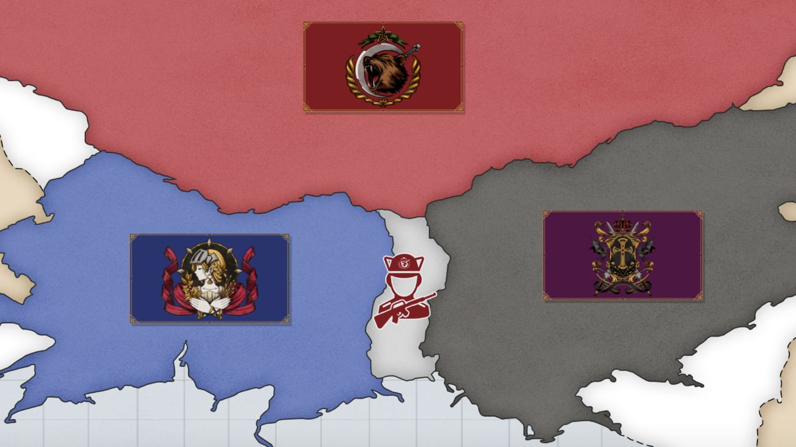

Latar Konflik · I

Terdapat 3 kekuatan besar dalam alur VN ini: Federasi Kaarg dihuni ras Hyume (Manusia), Kekaisaran Vilcar teritori ras Vamp (Vampir) berdarah murni, dan wilayah ras Anima (Half Beast) yaitu Republik Ymir.
Frost Neutral Territory, panggung utama cerita, merupakan Zona Buffer sekaligus tempat perhunian ketiga ras tadi — nah, apa jadinya jika dua musuh perang yang masih anget bermukim di tempat yang sama?